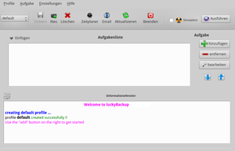
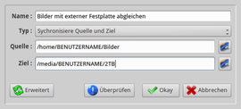

luckyBackup
Dieser Artikel wurde für die folgenden Ubuntu-Versionen getestet:
Ubuntu 16.04 Xenial Xerus
Ubuntu 14.04 Trusty Tahr
Zum Verständnis dieses Artikels sind folgende Seiten hilfreich:
luckyBackup ist ein grafisches Programm zur Datensicherung, das sich durch seine einfache Handhabung gleichermaßen für Einsteiger und Fortgeschrittene eignet. Mit der auf der Grafikbibliothek Qt basierenden Oberfläche lassen sich die vielfältigen Optionen von rsync bequem per Mausklick zusammenstellen, ohne dass die Kommandozeile bemüht werden muss. Über Profile können Umfang, Ziel und Ausführungszeitpunkt einer Sicherung den eigenen Wünschen angepasst werden.
Funktionen:
|  |
| Programmoberfläche nach dem ersten Start |
Diverse Prüfungen, um einem Datenverlust vorzubeugen
Simulationsmodus, bevor "echte" Daten bewegt werden
Sicherung auf entfernte Rechner
Einfache Rücksicherung
Synchronisation zweier Ordner
Bestimmte Daten von einer Sicherung ausschließen
Externe Befehle vor oder nach einer Aufgabe ausführen (Datenträger einbinden, Netzwerkverbindungen herstellen)
Zeitplanung via Cron
Benachrichtigungsanzeige
Protokollversand via E-Mail
Direkter Zugriff auf alle vorhandenen rsync-Optionen
Installation¶
 Das Programm kann aus den offiziellen Paketquellen installiert werden [1]:
Das Programm kann aus den offiziellen Paketquellen installiert werden [1]:
luckybackup (universe)
 mit apturl
mit apturl
Paketliste zum Kopieren:
sudo apt-get install luckybackup
sudo aptitude install luckybackup
Fremdpaket¶
Je nach Ubuntu-Version kann eine aktuellere Version über die Projektseite 
 heruntergeladen und manuell installiert werden [2].
heruntergeladen und manuell installiert werden [2].
Hinweis!
Fremdpakete können das System gefährden.
Anmerkung: Falls das Programm bereits aus den offiziellen Paketquellen installiert wurde, muss es vorher komplett deinstalliert werden.
Bei Verwendung des Fremdpakets bitte auch den Abschnitt Problembehebung beachten, wenn Datensicherungen mit Root-Rechten durchgeführt werden sollen.
Verwendung¶
Prinzipiell stehen zwei Modi zur Verfügung:
Sicherung des Homeverzeichnis oder Teile desselben
Sicherung anderer lokaler Ordner (Root-Rechte erforderlich)
Bei Ubuntu-Varianten mit einem Anwendungsmenü gibt es daher zwei Einträge: einmal unter "Zubehör -> luckyBackup" und andererseits unter "System -> luckyBackup (super user)". Falls die Systemsprache nicht automatisch erkannt wird, kann man die gewünschte unter "Settings -> Language" auswählen.
Die vom Programm verwendeten Profile fassen eine oder mehrere Aufgaben (beispielsweise die Sicherung verschiedener Ordner) zusammen. Da beim Programmstart automatisch ein Profil "default" angelegt wird, kann man im nächsten Schritt diesem eine neue Aufgabe hinzufügen. Alternativ erstellt man ein neues Profil, bevor man eine neue Aufgabe erstellt. Verschiedene Profile sind erst dann zwingend notwendig, wenn man die Datensicherung zu unterschiedlichen Zeitpunkten automatisiert durchführen möchte (siehe Zeitplaner).
Bei der Programmausführung mit Root-Rechten stehen die gleichen Möglichkeiten wie beim Start mit Benutzerrechten zur Verfügung. Unterschiede bestehen nur beim Zeitplaner (systemweite crontab), beim Zugriff auf Systemdateien bzw. bei den optionalen Befehlen, die evtl. zur Datensicherung notwendig sind (z.B. das Einbinden externer Datenträger).
Aufgaben¶
 Hier sind folgende minimale Angaben erforderlich:
"Name" - Bezeichnung der Aufgabe (z.B. Bilder abgleichen)
"Typ" - hier kann zwischen zwei Varianten ausgewählt werden:
"Sichere Quelle innerhalb des Ziels" oder
"Synchronisiere Quelle und Ziel"
"Quelle" - Quellordner (was wird gesichert?)
"Ziel" - Zielordner (wohin wird gesichert?)
Wenn weitere Angaben gewünscht sind, betätigt man die Schaltfläche "Erweitert" am unteren Fensterrand. Nun stehen zusätzliche Möglichkeiten zur Verfügung:
"Beschreibung" - falls der "Name" der Aufgabe nicht ausreicht
"Ausnahme" - Dateien oder Ordner von der Sicherung ausschließen
"Einfügen" - z.B. nur Dateien eines bestimmten Typs oder Ordner mit einen bestimmten Namen berücksichtigen
"Entfernt" - Ordner anderer Rechner nutzen
"Kommando-Optionen" - verschiedene Optionen, z.B. ob das Ziel ein FAT32-/NTFS-Dateisystem besitzt
"Ebenso ausführen" - unterteilt in "zuvor" und "danach" können weitere Befehle hinterlegt werden, beispielsweise zum Einbinden/Aushängen eines externen Datenträgers
Durch diese Optionen kann Sinn und Zweck einer Aufgabe sehr gezielt festgelegt werden. Bevor man das Anlegen einer Aufgabe mit der Schaltfläche "Okay" beendet, sollte man mit "Überprüfen" kontrollieren, ob evtl. Fehler bei der Aufgaben-Definition aufgetreten sind. Anschließend erscheint die neue Aufgabe in der Aufgaben-Liste. Über ein Kästchen am linken Fensterrand können Aufgaben innerhalb eines Profils gezielt aktiviert bzw. deaktiviert werden.
Zeitplaner¶
Nachdem festgelegt wurde, was wie gesichert werden soll, erfolgt im nächsten Schritt optional die Angabe, wann gesichert werden soll. Der Zeitplaner arbeitet ausschließlich mit Profilen (nicht mit Aufgaben), deren Ausführungszeitpunkt hier angegeben wird. Damit luckyBackup bei der Ausführung nicht ständig im Hintergrund aktiv sein muss, werden die gemachten Angaben in der benutzereigenen crontab hinterlegt. Daher bitte die Schaltfläche "in Cron-Datei eintragen" nicht vergessen.
E-Mail-Benachrichtigung¶
Falls man über die Auftragsausführung informiert werden möchte, können an dieser Stelle die erforderlichen Einträge vorgenommen werden. Einsteiger sollten eine E-Mail-Benachrichtigung erst konfigurieren, wenn grundlegende Kenntnisse zu den technischen Hintergründen des Transports von E-Mails vorhanden sind, sonst ist Frust vorprogrammiert.
Simulation¶
Um zu überprüfen, ob sich bei der Definition einer Sicherungsaufgabe nicht doch ein Fehler eingeschlichen hat, kann man die Option "Simulation" aktivieren, bevor man sich dem nächsten Schritt widmet (und mit Entsetzen feststellt, dass man bei einer Synchronisation Quelle und Ziel vertauscht hatte – was im Falle eines leeren Zielmediums mit einem totalen Datenverlust identisch ist).
Ausführen¶
Der im Zeitplaner definierte automatische Ausführungszeitpunkt kann auch weggelassen werden. Dann muss man nach Auswahl eines Profils die jeweiligen Aufgaben mit der Schaltfläche "Ausführen" selbst starten. Auf diese Weise können Probeläufe (mit und ohne Simulation) durchgeführt werden, bevor Datensicherungen mit dem Zeitplaner automatisiert werden.
Einstellungen¶
Alle Konfigurationsdaten werden im Ordner ~/.luckyBackup/ im Homeverzeichnis gespeichert.
Wiederherstellen¶
Da das Programm Dateien und Ordner unkomprimiert sichert, kann zum Zurückspielen einer Datensicherung ein beliebiger Dateimanager genutzt werden. Eine Ausnahme sind Aufgaben, bei denen Quell- und Zielordner synchronisiert wurden: hier kann die Rücksicherung auch mit luckyBackup erfolgen (unbedingt beachtet werden muss dann die korrekte Angabe von Quelle und Ziel).
Problembehebung¶
Deutsche Umlaute sollten bei der Benennung von Profilen und Aufgaben vermieden werden. Das betrifft unglücklicherweise auch Dateinamen mit Umlauten (siehe auch Know issues ).
Mit Root-Rechten starten¶
Verwendet man das Fremdpaket von luckyBackup, treten Probleme beim Programmstart mit Root-Rechten auf. Je nach Desktop-Umgebung lassen sich diese unterschiedlich beheben:
Bei GTK-basierenden Desktop-Umgebungen (alle außer KDE) muss ab Ubuntu 13.10 erst das folgende Paket installiert werden:
gksu (universe)
mit apturl
Paketliste zum Kopieren:
sudo apt-get install gksu
sudo aptitude install gksu
Dann ändern man den Programmstarter /usr/share/applications/luckybackup-gnome-su.desktop. In dieser Datei sucht man die Zeile mit
Exec=...und ersetztExec=su-to-root -X -c /usr/bin/luckybackup
durch
Exec=gksudo /usr/bin/luckybackup
Bei KDE ändert man dagegen die Datei /usr/share/applications/luckybackup-kde-su.desktop und ändert die Zeile:
Exec=/usr/bin/luckybackup
in
Exec=kdesudo /usr/bin/luckybackup
Manche Dateien werden nicht gesichert¶
In Kombination mit FAT- oder NTFS-Partitionen kann es dazu kommen, dass bestimmte Dateien nicht gesichert werden. Dazu siehe LuckyBackUp sichert keine *.exe-Dateien (Programme) im Forum. Darüber hinaus kann es passieren, dass ein leerer Ordner auf dem Zielmedium für Probleme sorgt (siehe Sicherung mit LuckyBackup in manche Ordner nicht möglich).
Links¶
Auf Knopfdruck – Daten sichern mit Lucky Backup
 - LinuxUser, 08/2012
- LinuxUser, 08/2012Grundlegende Sicherung Teil 3 – luckyBackup
- PCLinuxOS Magazin, 07/2011Einfachste Datensicherung mit Lucky Backup
- Blogbeitrag, 12/2010Datensicherung
 Grundlagen der Datensicherung, wichtige Verzeichnisse, weitere Programme
Grundlagen der Datensicherung, wichtige Verzeichnisse, weitere Programme
- Erstellt mit Inyoka
-
 2004 – 2017 ubuntuusers.de • Einige Rechte vorbehalten
2004 – 2017 ubuntuusers.de • Einige Rechte vorbehalten
Lizenz • Kontakt • Datenschutz • Impressum • Serverstatus -
Serverhousing gespendet von